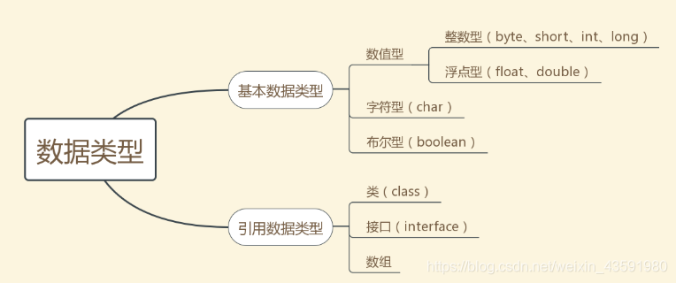
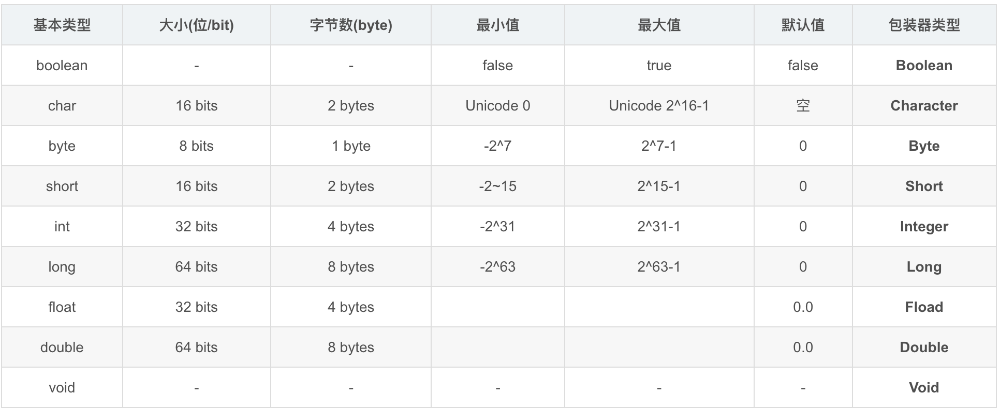
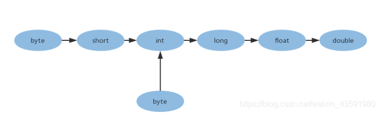

1、请你比较一下java和javascript
1）Java 是一种半编译半解释的完全面向对象的程序序言；Javascript是解释性的基于对象的脚本语言。
2）Java诞生于Sun公司，后被Oracle收购；JavaScript是由Netscape网景公司开发.
3）Java源代码在执行前必须经过编译后才能执行；Javascript是一种解释性编程语言，其源代码不需经过编译，由浏览器解释执行
4）Java采用强类型变量检查，即所有变量在编译之前必须作声明；Javascript中变量是弱类型的，甚至在使用前可以不作声明，JavaScript的解释器在运行时检查推断其数据类型。
5）代码格式不一样
拓展：为什么说Java是一种半解释半编译的程序设计语言呢？
什么是编译形语言，什么又是解释性语言
1、编译型：把做好的源程序全部编译成二进制代码的可运行程序。然后，就可以直运行这个程序。执行速度快，效率高，依靠编译器，跨平台性稍差。
2、解释型：把已经做好的源程序，翻译一句，执行一句，直到结束。执行速度慢，效率低，跨平台性稍好。
那么为什么说Java是编译型语言呢？
第一个观点是Javac进行编译，生成.class文件。我们再使用java 执行.class 文件.
那为什么又说Java是解释型语言呢？
java代码编译后不能直接运行，他是解释在Jvm上的，所以他是解释型的。不像C或者C++，他们经过一次编译之后，可以由操作系统直接执行。
而Java不一样，它首先由编译器编译成.class（字节码）文件，然后在通过JVM从.class文件中读一行解释执行一行，所以它是解释型的语言
2、请你讲讲&与&&的区别？
运算符
& 运算符有二种用法：
1、按位与
- 按位与底层操作的是二进制数，在JDK集合源码中常见，例如HashMap底层定位槽位的方式就是通过下面的公式实现：
- i = (n - 1) & hash 即为 数组长度 - 1 按位与上hash值。
> 关于HashMap 中（n-1）& hash的解释
1）Java的HashMap源码中用到的(n-1)&hash这样的运算，查找发现这是一种高效的求余数的办法。
2）假设被除数是x，对于除数是2n的取余操作x%2n，都可以写成x&(2n-1)，位运算效率高！
2、按位与操作二个数是如何实现的呢？
1 | 3 & 2 |
关于 && 运算符
1）&& 运算符是短路与运算符。& 与 && 的差别是非常大的，虽然二者都要求运算符左右二端的布尔值都是true整个表达式的值才是true. && 之所以称为短路运算符是因为 “== 如果&& 左边的表达式的值为false，右边的表达式会被直接短路掉，不会进行运算==”。很多时候我们可以都需要用到 && 而不是 &，例如在验证用户登录时判定用户名是不是null而且不是空字符串，应该写成
username!=null && !username.equals("")
3、int与Integer有什么区别
数据类型
Java是一个近乎纯洁的面向对象编程语言，但是为了编程的方便还是引入了基本数据类型，但是为了能够将这些基本数据类型当成对象操作，Java 为每一个基本数据类型都引入了对应的包装类型，int 的包装类就是 Integer，从 Java 5 开始引入了自动装箱/拆箱机制，使得二者可以相互转换。
Java 为每个原始类型提供了包装类型：
- 原始类型：boolean，char，byte，short，int，long，float，double
- 包装类型：Boolean，Character，Byte，Short，Integer，Long，Float，Double
1 | class AutoUnboxingTest { |
扩展：Java 8大基本数据类型（如果算上Void的话总共9种）
- 基本数据类型：

9种基本数据类型和取值范围：


图中从左向右的转换都是隐式转换，无需再代码中进行强制转换。从右向左均要进行强制类型转换，才能通过编译。强制转换会丢失精度，如：
1 | //从左到右 |
4、如何输出一个某种编码的字符串？
1 | Public String translate (String str) { |
5、Java中final关键字有哪些用法
1、修饰类：表示该类不能被继承。
2、修饰方法：表示方法不能被重写
3、修饰变量：表示变量只能赋值一次且赋值以后值不能被修改（常量）
6、String 与StringBuffer与StringBuffer的区别
考察：数据类型
JAVA 平台提供了两个类：String和StringBuffer，它们可以储存和操作字符串，即包含多个字符的字符数据。这个String类提供了数值不可改变的字符串。而这个StringBuffer类提供的字符串进行修改。当你知道字符数据要改变的时候你就可以使用StringBuffer。典型地，你可以使用StringBuffers来动态构造字符数据。
1、首先，我们来看看下面这一段代码在JVM中是如何解释执行的
1 | public class StringAndStringBAndSB { |
2、使用jclasslib查看Method/[1]main/[0]code 下面的code为
1 | 0 ldc #2 <hello> #ldc是从运行时常量池取出 pushed onto the operand stack. |
ok, 这道题解了, s3是通过new关键字获得字符串对象的。
回到题目, 也就是说字符串常量表中没有存储"hello world"的引用, 当s4以引号的形式声明字符串时, 由于在字符串常量池中查不到相应的引用, 所以会在堆内存中新创建一个字符串对象. 所以s3和s4指向的不是同一个字符串对象, 结果为false。
原文连接：从底层彻底搞懂String，StringBuilder，StringBuffer的实现
好的 回到正题：
兴趣使然的路飞大佬更详细的String StringBuilder StringBuffer区别以及源码分析